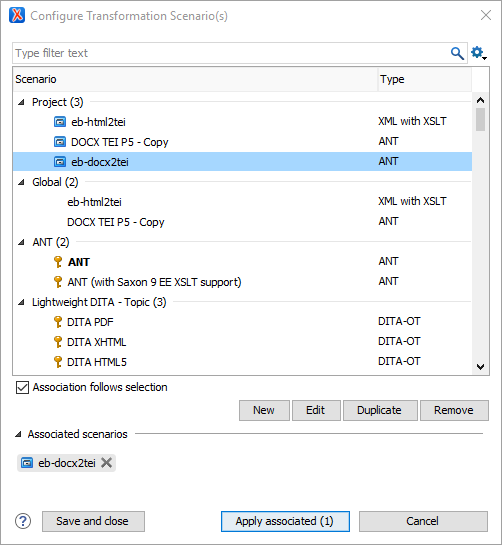
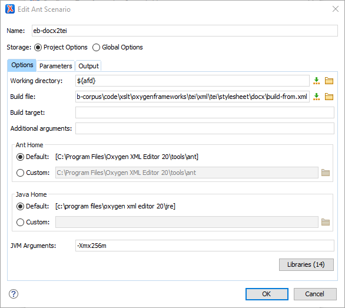
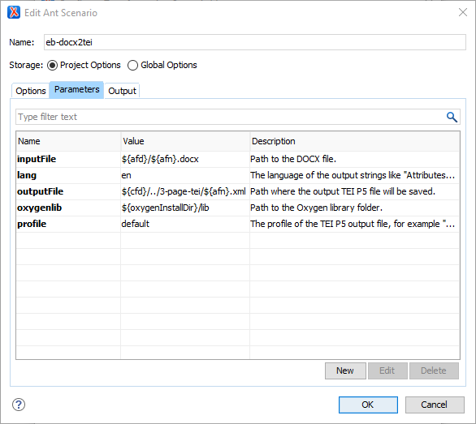
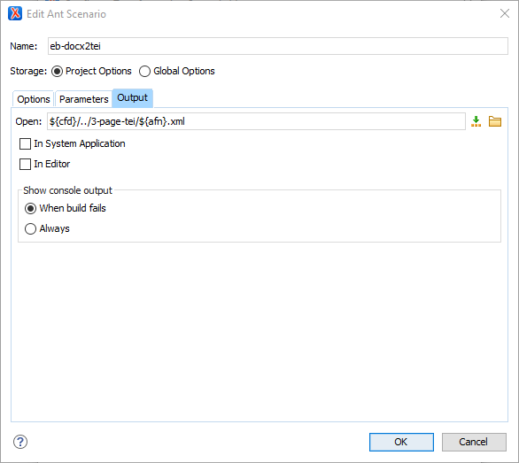

Work in batches again, using the eb-docx2tei.xsl script.
Select the appropriate 2-page-docx folder in the Oxygen XML EditorProject window. Right-click the folder and select Transform > Configure transformation scenarios…
If the eb-docx2tei ANT scenario does not appear in the
Project section of the main window, you will need to import it before proceeding.
If the eb-docx2tei ANT scenario does appear, proceed as
follows.
Confirm the settings for eb-docx2tei.xsl as follows.
In the Project section, select the eb-docx2tei ANT
scenario.
Figure 1: The Configure Transformation Scenario(s) window.

Click Edit to edit the scenario.
Figure 2: The Edit Ant Scenario window

Make sure the Project Options button is checked.
On the Options tab, set the working director to ${afd}.
The build file is located in
D:\knowledge-project\kp2\code\xslt\oxygenframeworks\tei\xml\tei\stylesheet\docx\build-from.xml.
Check that the rest of the settings are identical to those shown above.
Open the Parameters tab. The five parameters should appear as in the following
image.
Figure 3: The Parameters tab.

Pay attention to the outputFile parameter. This sets the path for the
output files, and it should read: ${cfd}/../3-page-tei/${afn}.xml.
Open the Output tab.
Figure 4: The Output tab.

This tab tells Oxygen whether or not to open the output file for you. If
you are transforming multiple files, you will not want them opened, so leave these boxes unchecked.
However, if you are running a single file and want to check the results immediately, check
In System Application. The Open: field should read
${cfd}/../3-page-tei/${afn}.xml.
Click OK to close the Edit Ant Scenario window and
return to the Configure Transformation Scenario(s) dialogue.
Click Apply associated to run the scenario on the selected files and save
the results in the 3-page-tei folder.
Validate all of the new XML files in the 3-page-tei folder.
To do this, select all of the new files in the OxygenProject window. Right-click, Validate > Validate.
The transformation is complete.
You may encounter errors at this stage. This should be rare, and the
errors should be relatively simple. A basic knowledge of TEI is all
that is needed to correct them manually. If you are not sure, please ask. If no one can help you,
make a note of the pages with errors and leave it for the person in charge.